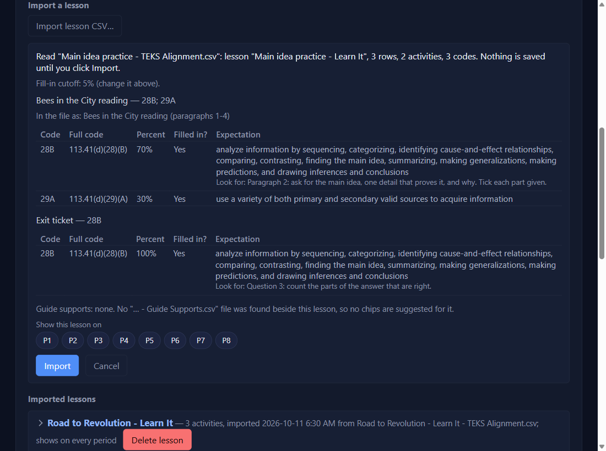
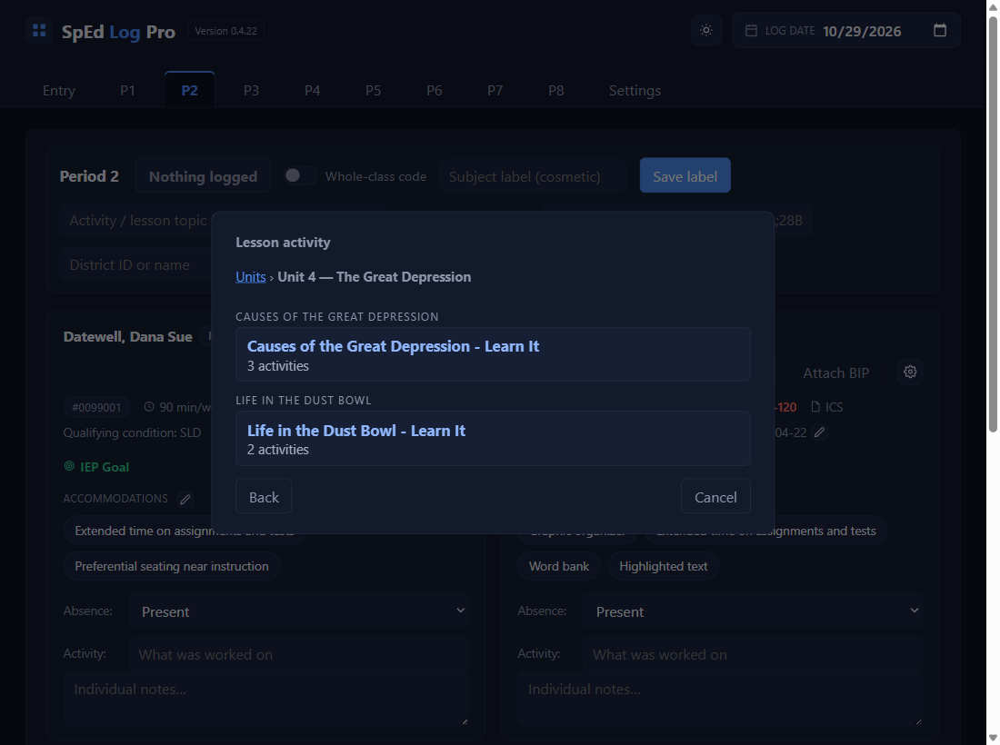
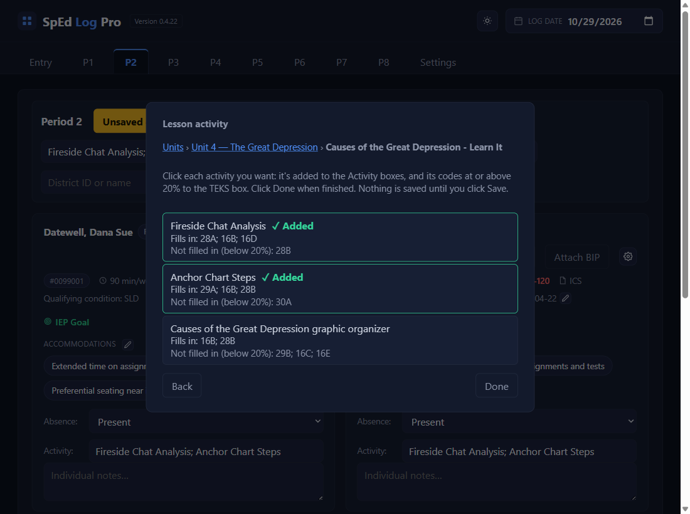
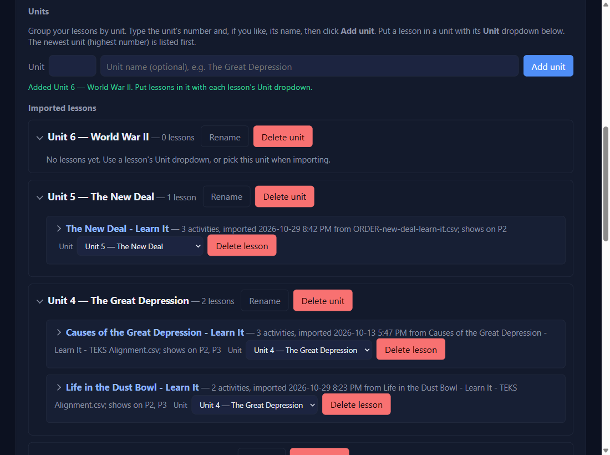
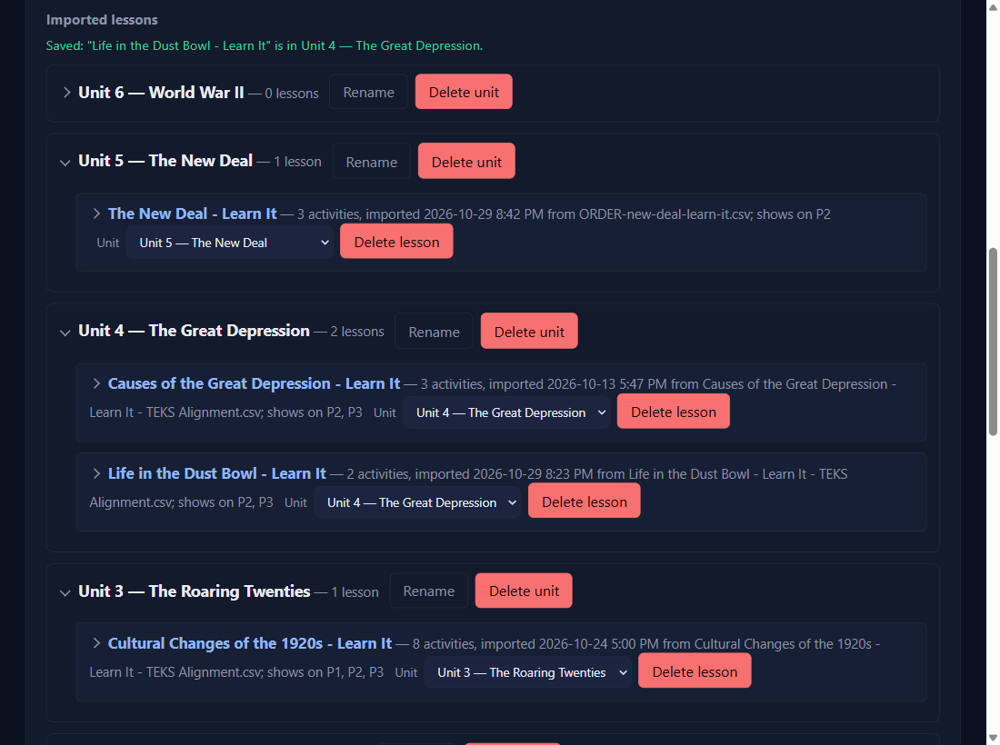
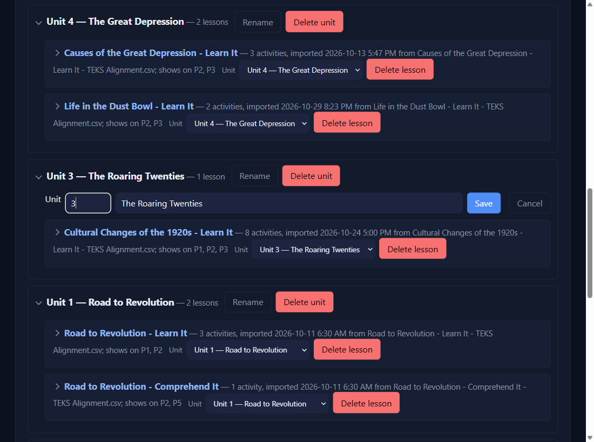

Import a lesson, organize it by unit
Import a lesson and pick its activities
Settings → Lesson activities → Import lesson CSV…
Pick the lesson's … - TEKS Alignment.csv. A preview shows each activity (brackets removed from the names) and its codes in your short form (113.41(d)(28)(A) becomes 28A).

A Look for column? A file from a newer builder prompt has a sixth column, Look for. The preview shows each one in grey under its code, and so does the lesson's list under Imported lessons. It tells you where to check that TEKS in the activity, and it shows on the goal alerts that activity raises. A file without the column imports exactly as before.

Choose its unit, tick the periods that teach it, then Import
Put in unitNEWfor version 0.4.22 and beyond starts on the unit of the lesson you imported last; change it if this lesson belongs elsewhere (see Part 2). Under Show this lesson on, tick at least one period. You can tick more later under Imported lessons.

On the period page: Lesson activity…, then a unit
Click Lesson activity….NEWfor version 0.4.22 and beyond It opens on Pick a unit: the units with a lesson for this period, newest first, and No unit last.

Pick the lesson
The line under the title shows where you are; click Units in it, or Back, to go back. Each topic is a small grey heading, with Learn It, Comprehend It, then Apply It.

Click each activity you want, then Done
Each activity shows the codes it fills in. Click one and it's added right away; the pop-up stays open and marks it ✓ Added, so you can click more, or go Back to another lesson.NEWfor version 0.4.22 and beyond Click Done when you're finished.

The boxes fill in; check them and Save
Each activity is added to the Activity boxes (after a ;) and its codes to the TEKS box. Nothing is saved until you click Save.

Organize lessons into unitsNEWfor version 0.4.22 and beyond
Settings → Lesson activities → Units: Add unit
Type the unit's number (1 to 99) and, if you like, its name, then click Add unit. The name is optional: with none it's just Unit 6. The new unit shows at the top of Imported lessons, saying it has no lessons yet.

Put each lesson in its unit
Every lesson has a Unit dropdown on its title bar. Choose the unit, and the lesson moves there right away. Its period ticks and activities don't change. Lessons you had before units start in No unit, at the bottom.

Rename or delete a unit
Rename opens the number and name in two boxes; change them and click Save. Delete unit asks first, then moves its lessons to No unit. No lesson or activity is ever deleted with it.

New lessons go straight into a unit
When you import a lesson, Put in unit starts on the unit of the lesson you imported last, so a run of lessons from one unit goes in together. See step 2 above.
✓ You'll know it worked
Imported "The New Deal - Learn It": 3 activities, 13 codes. In Unit 5 — The New Deal. Shows on P2.- Picking fills the Activity and TEKS boxes.
Added Unit 6 — World War II.Saved: "…" is in Unit 4 — The Great Depression.- Lesson activity… opens on Pick a unit, newest first.
✕ Avoid these
- No period ticked. Import is refused until one is.
- Expecting it to replace what you typed. It adds after a
;. - Clicking Cancel or Done to undo a pick. They only close the pop-up; delete the text from the box instead.
- Writing "Unit 3" in the name box. The number has its own box; the name is just the topic.
- Looking for an empty unit on a period page. The pop-up only lists units with a lesson for that period.
⚠ If you see this
Not imported: "…" has 2 problems. Nothing was saved.Each problem is listed by line number. Fix the file and import again.
No lessons for Period … yet.Tick that period for a lesson in Settings → Lesson activities.
Unit 3 already exists (The Great Depression). Nothing was saved.Each number is used once. Pick another number, or Rename the one you have.